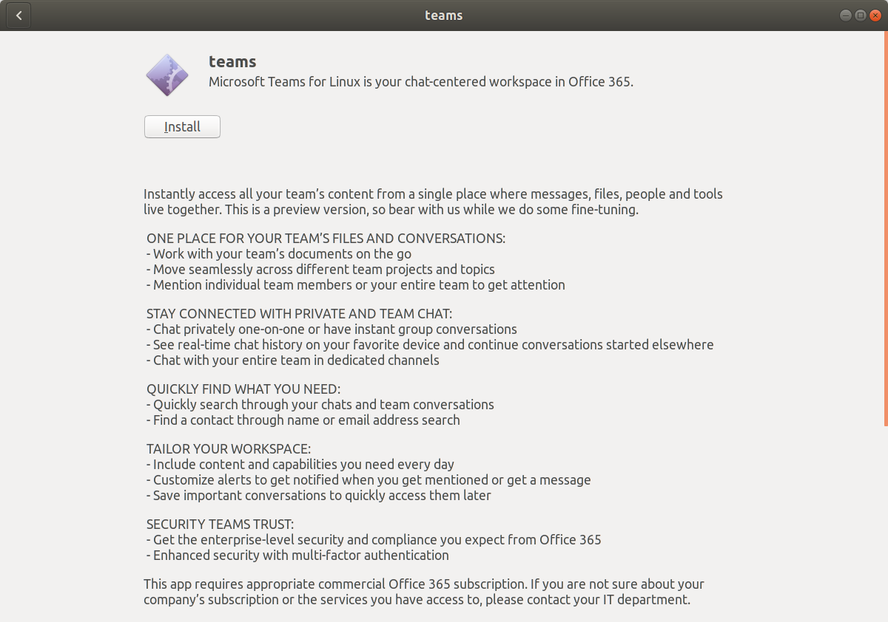

7. Alternative la instalarea și dezinstalarea aplicațiilor¶
Așa cum am văzut în secțiunea Instalarea și dezinstalarea aplicațiilor, distribuțiile Linux dispun de un sistem de gestiune a pachetelor software ((software) package management system).
Acesta oferă unul sau mai multe depozite de pachete (repository) și utilitare specializate pentru gestiunea acestora (precum apt pe distribuțiile bazate pe Debian).
Cu ajutorul acestor utilitare instalăm pachete din repository, sau le dezinstalăm.
Folosirea unui sistem de gestiune a pachetelor ușurează experiența utilizatorului. Utilizatorul nu mai trebuie să caute pe Internet un pachet, nu mai trebuie să se asigure că este versiunea compatibilă; sistemul de gestiune face aceste lucruri pentru utilizator.
Cu toate acestea, sistemul de gestiune a pachetelor specific distribuției are dezavantaje:
Un pachet căutat nu se găsește în depozit din diferite rațiuni: nu este compatibil cu alte pachete, are probleme de licențiere sau, pur și simplu, nu a fost adăugat de distribuție.
O versiune mai actuală a pachetului, necesară utilizatorului, nu se găsește în depozit.
Instalarea unei versiuni mai noi a pachetului, dintr-un alt depozit, poate produce probleme de dependență cu alte pachete instalate.
Actualizarea unui pachet poate necesita actualizarea multor pachete sau chiar a întregii distribuții.
De aceea, există alte moduri de a instala aplicații necesare utilizatorului:
Instalarea unui aplicații manual, direct de la furnizorul acestuia, prin descărcarea pachetului software corespunzător și instalarea sa.
Instalarea unei aplicații din surse.
Folosirea unor sisteme alternative de gestiune a pachetelor.
Instalarea manuală sau din surse a unei aplicații (opțiunea 1 și opțiunea 2) sunt operații mai complicate care nu mențin avantajele sistemului de gestiune al pachetelor.
De aceea, din punctul de vedere al ușurinței instalării, dezinstalării și gestiunii aplicațiilor, este de preferat să folosim opțiunea 3, adică sisteme alternative de gestiune a pachetelor.
Sistemele alternative de gestiune a pachetelor oferă o interfață similară cu sistemele de gestiune a pachetelor specifice distribuției fără dezavantajele acestora.
Sisteme alternative sunt Snap, Flatpak, AppImage.
Aici vom folosi Snap; interfața de folosire este, însă, similară pentru Flatpak și AppImage [1]; mai mult, este apropiată de utilitare de gestiune a pachetelor (precum apt).
7.1. Instalarea folosind Snap¶
Utilitarul pdftk, pentru gestiunea fișierelor PDF, nu se găsește în depozitul distribuției Ubuntu.
Dar se găsește în repository-ul Snap.
7.1.1. Instalarea folosind interfața grafică¶
În Ubuntu, instalarea pachetelor Snap poate fi făcută din interfața grafică folosind aplicația Ubuntu Software (GNOME Software) la fel ca în cazul pachetelor standard Ubuntu, cum am văzut în secțiunea Gestiunea pachetelor din interfața grafică.
La fel ca în cazul pachetelor standard Ubuntu, căutăm numele aplicației și ajungem în fereastra de instalare.
În cazul utilitarul pdftk, fereastra de instalare din Ubuntu Software va fi ca în imaginea de mai jos:

Observăm, în fereastră de instalare, că pachetul se găsește în depozitul Snap (Snap Store) [2].
Observăm că pachetul este proprietar (proprietary), adică nu este open source, motiv probabil pentru care nu se găsește în depozitul standard Ubuntu.
7.1.2. Instalarea folosind interfața în linia de comandă¶
Similar utilitarului apt, Snap oferă utilitarul snap pentru instalarea, dezinstalarea și gestiunea pachetelor în linia de comandă.
Astfel, pentru a instala pachetul pdftk folosim comanda:
student@uso:~$ sudo snap install pdftk
[sudo] password for student:
pdftk 2.02-4 from Scott Moser (smoser) installed
Acum pachetul pdftk este instalat [3].
Un mod simplu de a verifica acest lucru este prin folosirea comenzii pdftk:
student@uso:~$ pdftk
SYNOPSIS
pdftk <input PDF files | - | PROMPT>
[ input_pw <input PDF owner passwords | PROMPT> ]
[ <operation> <operation arguments> ]
[...]
7.2. Căutarea unui pachet Snap¶
Atunci când căutăm un anumit pachet Snap, avem două opțiuni:
Folosim interfața grafică, prin intermediul aplicației Ubuntu Software, așa cum am văzut în secțiunea Identificarea unei aplicații de instalat.
Folosim linia de comandă, ca mai jos:
student@uso:~$ snap search skype Name Version Publisher Notes Summary skype 8.64.0.81 skype✓ classic One Skype for all your devices. New features. New look. All Skype. audio-recorder 3.0.5+rev1432+pkg-7b07 brlin - A free audio-recorder for Linux (EXTREMELY BUGGY) guvcview 2.0.6+pkg-f796 brlin - A simple v4l2 full-featured video grabber spreedme 0.29.5snap1 nextcloud✓ - Spreed.ME audio/video calls and conferences feature for the Nextcloud Snap ramboxpro 1.3.2 ramboxapp✓ - Rambox Pro fakecam 2.0.0 diddledan - Fakecam
În comanda de mai sus am căutat pachetele care sunt relevante pentru șirul de căutare
skype. Am obținut pachetulskypeși alte pachete apropiate.
7.3. Gestiunea pachetelor Snap¶
7.3.1. Listarea pachetelor Snap¶
Pentru a valida instalarea pachetelor Snap, listăm pachetele instalate folosind comanda:
student@uso:~$ snap list
Name Version Rev Tracking Publisher Notes
core 16-2.46.1 9993 latest/stable canonical✓ core
core18 20200724 1885 latest/stable canonical✓ base
gnome-3-26-1604 3.26.0.20200529 100 latest/stable/… canonical✓ -
gnome-3-28-1804 3.28.0-17-gde3d74c.de3d74c 128 latest/stable canonical✓ -
gnome-3-34-1804 0+git.3009fc7 36 latest/stable canonical✓ -
gnome-calculator 3.38.0+git7.c840c69c 826 latest/stable/… canonical✓ -
gnome-characters v3.34.0+git9.eeab5f2 570 latest/stable/… canonical✓ -
gnome-logs 3.34.0 100 latest/stable/… canonical✓ -
gnome-system-monitor 3.36.0-12-g35f88a56d7 148 latest/stable/… canonical✓ -
gtk-common-themes 0.1-36-gc75f853 1506 latest/stable/… canonical✓ -
pdftk 2.02-4 9 latest/stable smoser -
Comanda snap list afișează pachetele Snap instalate pe sistem și versiunea acestora.
Dacă dorim să afișăm informații despre un pachet Snap, indiferent dacă este instalat sau nu, folosim comanda:
student@uso:~$ snap info rambox
name: rambox
summary: Rambox CE
publisher: Rambox (ramboxapp✓)
store-url: https://snapcraft.io/rambox
contact: https://github.com/ramboxapp/community-edition/issues
[...]
7.3.2. Dezinstalarea unui pachet Snap¶
Pentru a dezinstala un pachet Snap, folosim o comandă de forma:
student@uso:~$ sudo snap remove pdftk
[sudo] password for student:
pdftk removed
În comanda de mai sus, am dezinstalat aplicația pdftk.
7.4. Exerciții: Instalare folosind Snap¶
Folosiți Snap pentru a instala aplicațiile:
Skype
Spotify
Visual Studio Code
Discord
Verificați instalarea aplicațiilor prin listarea aplicațiilor instalate. Porniți aplicațiile din interfața grafică.
Dezinstalați aplicația Spotify. Verificați că aplicația nu mai este instalată.
7.5. Instalarea manuală a unei aplicații¶
Uneori pachetele nu se găsesc nici în depozitul standard de pachete al distribuției, nici într-un repository Snap (sau Flatpak sau AppImage). În acest caz trebuie să recurgem la instalarea manuală a acestora.
7.5.1. Instalarea unui pachet standard de la furnizor¶
Un pachet se poate instala direct de la furnizorul aplicației.
În mod tipic, furnizorul are un pachet în formatul distribuției (.deb sau .rpm) care poate fi descărcat și instalat.
De exemplu, dacă dorim să instalăm aplicația Teams (de la Microsoft) pe o distribuție Ubuntu, vom descărca pachetul format .deb folosind pagina de download Teams.
Pachetul poate fi instalat în momentul descărcării folosind opțiunea Software Install ca în imaginea de mai jos:
{kind=link}
Această opțiune duce la pornirea interfeței grafice de instalare a pachetului, ca în imaginea de mai jos:
{kind=link}
Alternativa este descărcarea pachetului și instalarea sa folosind comanda dpkg:
student@uso:~$ sudo dpkg -i ~/Downloads/teams_1.3.00.16851_amd64.deb
Comanda de mai sus duce la instalarea pachetului teams, presupunând că fișierul format .deb se găsește în directorul ~/Downloads.
În urma instalării din interfața grafică sau interfața în linia de comandă, aplicația Teams este acum disponibilă și poate fi pornită.
Comanda corespunzătoare este teams.
7.5.2. Instalarea din arhivă / executabil¶
Alteori producătorul aplicației nu oferă un pachet în formatul distribuției. Formatul oferit este al unei arhive sau al unui executabil sau al unui script de instalare. În oricare situație, instalarea este specifică aplicației.
De exemplu, în cazul aplicației IDA, versiunea freeware a acesteia presupune descărcarea unui pachet specific (custom) de la pagina de download IDA Freeware.
Putem descărca acest pachet direct în linia de comandă, folosind utilitarul wget:
student@uso:~/Downloads$ wget https://out7.hex-rays.com/files/idafree70_linux.run
[...]
2020-09-26 22:38:36 (11.8 MB/s) - ‘idafree70_linux.run’ saved [47645071/47645071]
Fișierul idafree70_linux.run a fost salvat în directorul curent, adică în ~/Downloads/:
student@uso:~/Downloads$ ls
idafree70_linux.run opensc-0.20.0 opensc-0.20.0.tar.gz
Extensia .run a pachetului este un indiciu că acesta trebuie rulat în forma unui script.
Înainte de a rula scriptul, trebuie să îi acordăm permisiuni de execuție folosind comanda chmod:
student@uso:~/Downloads$ chmod a+x idafree70_linux.run
În urma comenzii de mai sus, fișierul idafree70_linux.run este executabil [4].
Pentru rularea scriptului (și, astfel, instalarea pachetului) rulăm comanda:
student@uso:~/Downloads$ sudo ./idafree70_linux.run
----------------------------------------------------------------------------
Welcome to the IDA Freeware 7.0 Setup Wizard.
[...]
Do you accept this license? [y/n]: y
[...]
Installation Directory [/opt/idafree-7.0]:
[...]
Do you want to continue? [Y/n]: Y
[...]
Setup has finished installing IDA Freeware 7.0 on your computer.
În urma rulării comenzii de mai sus și furnizării răspunsurilor la întrebările din prompt, aplicația IDA este instalată în directorul /opt/idafree-7.0.
Poate fi pornită folosind combinația de taste Alt+F2 sau din linia de comandă:
student@uso:~$ /opt/idafree-7.0/ida64
Important
Dezavantajul instalării specifice unei aplicații, dintr-o arhivă sau un executabil, este că nu este integrată cu sistemul de pachete al distribuție. Din acest motiv nu poate fi ușor dezinstalată, actualizată și nu este instalată într-un mod în care poate fi ușor pornită. Așa cum observăm și din instalarea aplicației IDA, pentru pornirea sa trebuie să furnizăm calea completă către executabil, în loc de folosirea unei comenzi simple.
Note de subsol